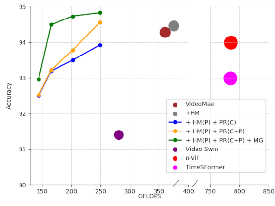
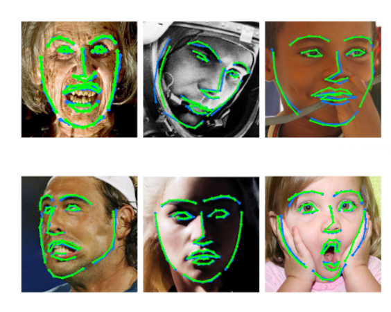
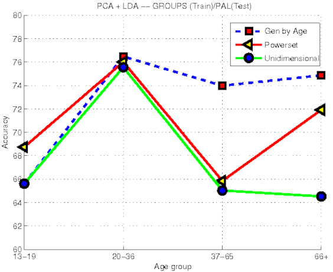
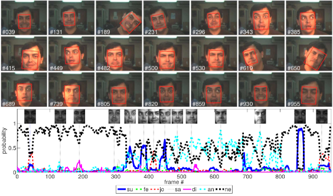
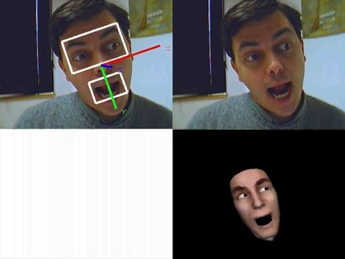

Facial and Body Attributes
|

Action recognition. We use a multi-task approach to estimate body landmarks and action recognition. The model is a VideoMAE, a Vision Transformer (ViT) pretrained masking out may of the tokens to reconstruct the input video. Landmarks taks is used to guide pose token pruning and merging getting a much more computationally efficient inference with even improved action recognition accuracy than the base VideoMAE model. Related Publications: IV'2024, Arxiv'024 |
|

Facial landmarks. We study the problem of facial landmarks localization with a combination of Convolutional Neural Networks (CNNs) and Ensembles of Regression Trees (ERT). Once initialized with a valid face shape, the ERT is able to keep the face shape while estimating the non-rigid facial deformations. The ERT allows to get top performance with a single encoder-decoder network (i.e. while other solutions use a cascade of several encoder-decoders). We also study the cascade of CNNs and we find that with only 2 we can get top performance by learning to extract the landmark coordinate from the heatmp instead of using the usual argmax. Related Publications: ECCV'2018, CIARP'2018, CVIU'2019, PRL'2020, PAMI'2021 |

Dependencies between facial attributes given the appearance. Recent works report significant drops in performance for state-of-the-art gender classifiers when evaluated "in the wild", i.e. with uncontrolled demography and environmental conditions. We hypothesize that this is caused by the existence of dependencies among facial demographic attributes that have not been considered when building the classifier. In the paper we study the dependencies among gender, age and pose facial attributes. By considering the relation between gender and pose attributes we also avoid the use of computation-ally expensive and fragile face alignment procedures. In the experiments we confirm the existence of dependencies among gender, age and pose facial attributes and prove that we can improve the performance and robustness of gender classifiers by exploiting these dependencies. Related Publications: CIARP'2011, IBPRIA'2013, PRL'2014 |
 Facial age estimation
Facial age estimation We developed a "light weight" face age estimation algorithm using PCA+LDA and KNN regression. Related Publications: IBPRIA'2011 |
 PCA+LDA face gender recognition.
PCA+LDA face gender recognition.We developed gender classification algorithm using an simple holistic approach. We got 93% accuracy on FERET database (5-fold cross validation) and an speed comparable to the fastest gender recognition algorithms. This algorithm is based on PCA+LDA with proper cross-validation of PCA dimensions. Related Publications: PAMI'2011 Some videos: [Video 1 (youtube)] [Video 2 (vimeo with sound)] |
|

Face expressions recognition We used our 2D appearance tracking algorithm [BMVC'2006] to track the face. We developed a user independent manifold of face expressions using PCA+LDA and then we classified the expressions using KNN. Related Publications: PAA'2008, FG2008. Some videos: [Video 1 (youtube)] [Video 2 (mpeg)] Matlab scripts: Cohn-Kanade database a priori classification of facial expresions |
|

Appearance-based reanimation from expressions estimation We developed a way of doing 3D face reanimation based on appearance-based technicques. Related Publications: IbPRIA'2005. ICPR'2006. Some videos: [video 1], [video 2], [video 3], [video 4], [video 5] |